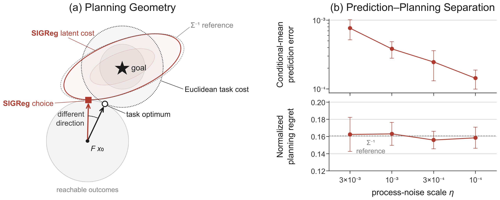
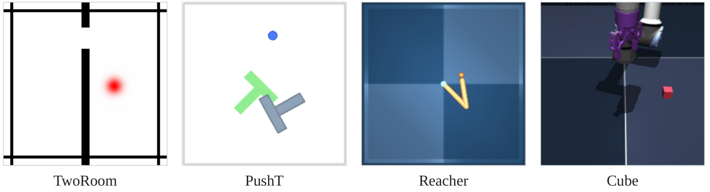
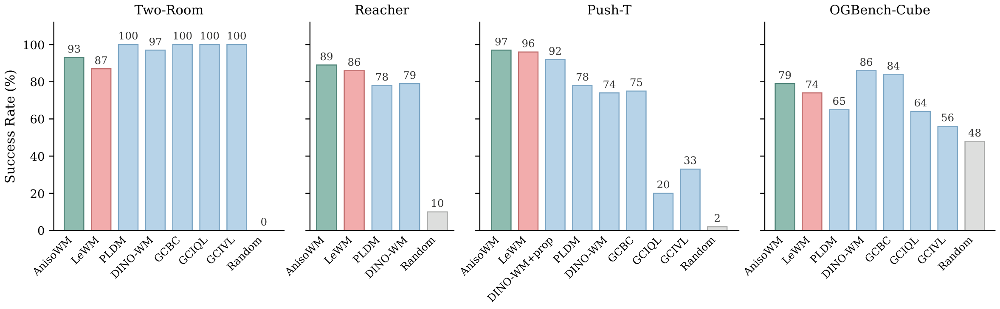
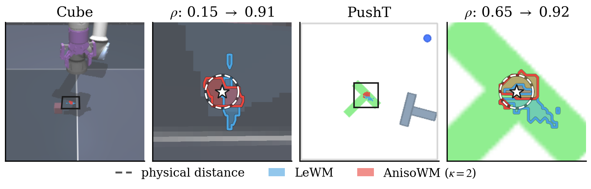
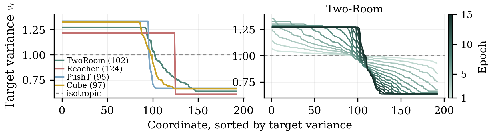

Latent world models learn action-conditioned dynamics in representation space and often rank candidate actions by the Euclidean distance between a predicted representation and a goal representation. Joint training regularizes the representation to prevent collapse, but the same regularization also fixes how terminal errors are weighted during planning. We show that accurate prediction and noncollapsed representations do not guarantee a task-aligned planning cost: isotropic Gaussian regularization can induce a geometry that ranks feasible outcomes differently from the task cost. We therefore introduce AnisoWM with ΛReg, which replaces the fixed isotropic Gaussian target with a learnable diagonal covariance under fixed-trace and condition-number constraints. The prediction objective, predictor architecture and Euclidean planner are unchanged, and the target is used only during training. Across four visual control environments, AnisoWM improves planning success in all four, and its latent costs agree better with recorded task outcomes.
LeWM plans by minimizing the terminal latent cost with CEM,
Rescaling latent directions changes their relative error weights, so the geometry of the representation determines which reachable outcome the planner prefers. For an invertible encoder A with isotropic feature covariance, AΣA⊤ = sI, the latent cost is
An isotropic representation therefore whitens the state and weights errors along low-variance directions more heavily than the Euclidean task cost does. We prove that the joint prediction–SIGReg objective selects this metric as the process noise vanishes, while the prediction loss goes to zero.

Figure 1. Prediction–planning separation with a nonlinear encoder. (a) The Euclidean task cost and the SIGReg latent cost select different outcomes from the same reachable set, and the learned latent geometry closely follows the Σ−1 reference. (b) As the process noise decreases by 30×, held-out prediction error decreases substantially, while normalized planning regret stays near 0.16 over ten seeds.
AnisoWM relaxes the equal-variance constraint during representation learning. Let fθ(o) ∈ ℝD be the encoder output and Λ = diag(v1, …, vD) the covariance of a zero-mean Gaussian target, constrained to
The fixed trace keeps the total variance constant, and κ bounds the allowed anisotropy; κ = 1 recovers the isotropic target of LeWM. ΛReg standardizes the features before the original SIGReg statistic and is trained jointly with the encoder and predictor:
Λ receives gradients only through ΛReg, so the allocation of variance is decided by predictive training rather than by task supervision. In the linear Gaussian model, a suitable allocation compensates for the inverse-covariance weighting of the isotropic target and removes the finite-horizon planning regret. Prediction and planning use the original latent z, and Λ is discarded after training.

Figure 2. Environments. We use the datasets, model architecture and visual goal-planning protocol of LeWM.
With a single shared bound κ = 2, AnisoWM plans more successfully than LeWM in all four environments: 93% vs. 87% on Two-Room, 89% vs. 86% on Reacher, 97% vs. 96% on Push-T and 79% vs. 74% on OGBench-Cube. Both models are trained in the same pipeline with identical settings and three training seeds, so the regularization target is the only difference.

Figure 3. Planning success rate (%). AnisoWM and LeWM are means over three training seeds; the other baselines are taken from the LeWM paper.
For each initial–goal pair, both models score the same recorded action sequences. We report the fraction of sequence pairs whose cost ordering agrees with the ordering of the outcomes they actually reached. Jenc encodes the reached observation, and Jpred is the planning cost, which also includes the predictor rollout.
| Jenc (representation only) | Jpred (planning cost) | |||
|---|---|---|---|---|
| Environment | LeWM | AnisoWM (Ours) | LeWM | AnisoWM (Ours) |
| Two-Room | 0.564 | 0.661 | 0.575 | 0.646 |
| Reacher | 0.790 | 0.893 | 0.676 | 0.723 |
| Push-T | 0.647 | 0.641 | 0.594 | 0.621 |
| OGBench-Cube | 0.555 | 0.576 | 0.537 | 0.553 |
The planner ranks actions by distance in latent space, so the shape of that distance over the state space is what decides the ranking. We encode a grid of physical states and take the cost to a goal as ‖f(ox) − f(og)‖², then look at the positions each model ranks in the lowest tenth of that cost. A cost that behaved like a distance would give the dashed disc; the baseline's set instead reaches positions the goal has nothing to do with.

Figure 4. For each task, the rendered arena with the measurement window boxed, and that window. ρ is the rank agreement between the latent cost and physical distance over the window. The two goals are chosen, as the clearest of several hundred positions scored for this purpose; this is a geometric statistic the planner never computes directly, so it does not by itself establish that the ordering is why the success rates move.
Under the same trace and κ = 2 bound, training selects a different variance allocation in each environment, and the allocation keeps changing after the condition-number bound is reached. The bound limits how anisotropic the target can be, but does not determine the spectrum itself.

Figure 5. Left: learned target at κ = 2 in each environment, sorted by variance. Right: target spectrum over training for one Two-Room run.
LeWM and AnisoWM start from the same initial state and use the same goal, CEM planner and random seed.
Case 1
Case 2
Case 3
Case 1
Case 2
Case 3
Case 1
Case 2
Case 3
Case 1
Case 2
Case 3